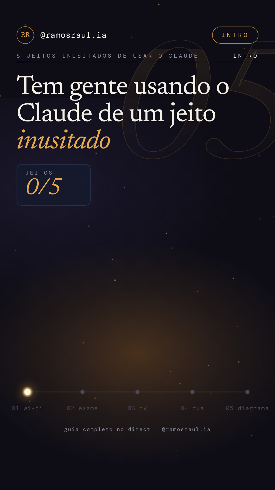
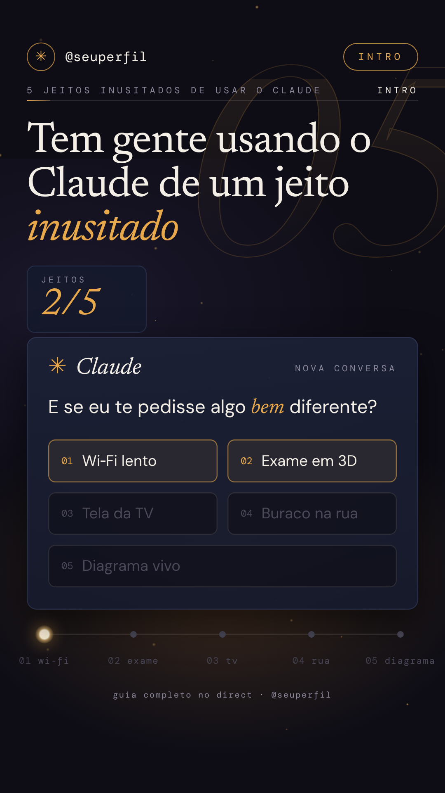

O gancho
A moldura nasce peça por peça, a pergunta entra e um card de conversa acende os 5 jeitos, um por batida, enquanto o contador sobe até 5/5.


- 0,05 s Tipografia A moldura nasce de cima para baixo: selo, @, pílula, régua, trilha, cada peça 70 ms depois da outra, do desfoque para o foco.
- 0,2 s Tipografia A frase sai do desfoque palavra a palavra, 45 ms entre elas; "inusitado" em itálico dourado.
- 0,75 s Objeto O card de conversa sobe 6 % com mola curta e a pergunta se escreve nele.
- 1,5 s Objeto Um jeito acende a cada 0,4 s (1,5 · 1,9 · 2,3 · 2,7 · 3,1): o chip ganha borda dourada e o contador pula 1 → 5 com um empurrão pequeno.
- 3,2 s Vida no hold Hold: a poeira sobe, a luz respira, o último chip brilha uma vez.
- 3,94 s Transição O conteúdo desfoca e acelera para fora em 260 ms; corte seco; a moldura fica.